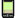

| 作品名： | モウグリの兄弟たち |
| 作品名読み： | モウグリのきょうだいたち |
| 原題： | Mowgri's Brothers |
| 著者名： | キプリング ラデャード |
| 分類： | NDC K933 |
| 作品について： | インドのジャングルに住む誇り高き獣たちは、自分たちの掟－”ジャングルの掟”を持っている。セオニの狼の群れもまたその掟に従い、狩りをする。ヒトとして生まれ、狼に育てられた「蛙っ仔」モウグリはどこへ行けばいいのだろう。キプリングの最も有名な作品、『ジャングル・ブック』を大人のために児童文学とは別の視点から訳した。 各章は読みきりで訳出部は最初の章に当たる。キプリング29歳の作品。（山本ゆうじ） この作品の詳細が、秋桜舎のページで紹介されています。 |
| 文字遣い種別： | 新字新仮名 |
| 備考： |
| 分類： | 著者 |
| 作家名： | キプリング ラデャード |
| 作家名読み： | キプリング ラデャード |
| ローマ字表記： | Kipling, Rudyard |
| 生年： | 1865-12-30 |
| 没年： | 1936-01-18 |
| 人物について： | ラデャード・キプリング（1865-1936）イギリス人作家、詩人。インドのムンバイ（ボンベイ）に生まれ、イギリスで教育を受ける。イギリス人作家としてはじめてのノーベル文学賞を1907年に受賞。同時代のコナン・ドイル同様、息子を第一次世界大戦で失う。愛国者、帝国主義者として知られ、イギリスの植民地政策を擁護した。西洋人の視点からとはいえ、インドを舞台にした多くの作品からは人間性への深い洞察と共感が伺える。（山本ゆうじ） |
| 分類： | 翻訳者 |
| 作家名： | 山本 ゆうじ |
| 作家名読み： | やまもと ゆうじ |
| ローマ字表記： | Yamamoto, Yuji |
| 人物について： | 秋桜舎代表。翻訳、執筆、企画、コンサルティングを手がける。国際学校UWCイギリス校、筑波大学を経て、シカゴ大学で人文学修士号取得。二十カ国百都市を訪問し八十カ国以上の人々と出会う。日英仏語で、美学・比較文学・芸術学・文章技法などを学ぶ。近著に『世界に通じる学校――国際学校UWCの異文化理解教育』 。 |
| 底本： | "The Project Gutenberg Etext of The Jungle Book by Kipling" Jnglb10.zip および Rudyard Kipling, "The Jungle Books," Penguin Polular Classics ed.,London: Penguin Books, 1994, First published in 1894. |
| ファイル種別 | 圧縮 | ファイル名（リンク） | 文字集合／符号化方式 | サイズ | 初登録日 | 最終更新日 |
|---|---|---|---|---|---|---|
| zip | http://cosmoshouse.com/works/jungle/jungle.zip | JIS X 0208／ShiftJIS | 0 | 2000-04-21 | 2009-11-28 | |
| なし | http://cosmoshouse.com/works/jungle/jungle.htm | JIS X 0208／ShiftJIS | 0 | 2000-04-21 | 2009-11-28 | |
|  PalmDocファイル | なし | http://cosmoshouse.com/works/jungle/jungle.pdb | JIS X 0208／ShiftJIS | 0 | 2000-04-21 | 2009-11-28 |
●作家リスト：公開中
[あ]
[か]
[さ]
[た]
[な]
[は]
[ま]
[や]
[ら]
[わ]
[他]
●作家リスト：全
[あ]
[か]
[さ]
[た]
[な]
[は]
[ま]
[や]
[ら]
[わ]
[他]
●トップ ●インデックス／全 ●作家別作品リスト